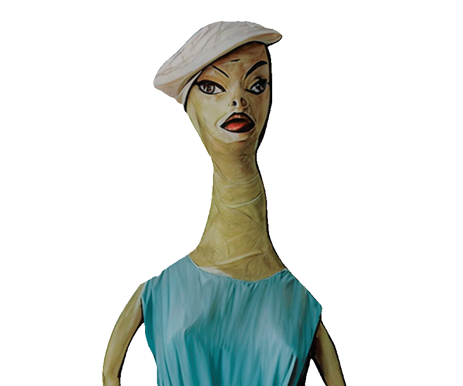
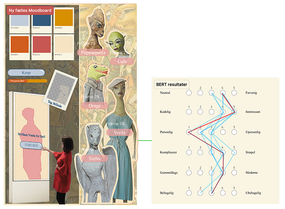

01
Projektet
Hvordan kan man gøre kunst og museumsoplevelser mere interaktive og interessante for en yngre målgruppe?
Det var udgangspunktet for vores projekt for Museum Ovartaci, hvor vi udviklede idéen til en interaktiv quiz, som besøgende kan bruge direkte på museet.
Quizzen tager udgangspunkt i spørgsmålet "Hvilket Ovartaci- værk minder du mest om?". Gennem en række spørgsmål bliver brugeren matchet med et af Ovartacis værker. Efterfølgende kan brugeren læse mere om værket og tage en selfie med en digital maske inspireret af værket.

02
Processen
Vi begyndte med research og målgruppeanalyse for at forstå, hvordan vi kunne skabe en oplevelse, der især appellerede til yngre museumsbesøgende.
Gennem blandt andet interviews, personas, moodboards, BERT- tests, Crazy 8 og experience mapping undersøgte og udviklede vi idéen. Vi brugte vores research løbende til at justere konceptet og brugeroplevelsen.
Herefter designede vi interfacet i Figma med udgangspunkt i en iPad/ touchscreen, så løsningen kunne fungere som en fysisk installation på museet.
Til sidst udviklede vi en interaktiv HTML/CSS/JavaScript-prototype, hvor quizzen, resultatet og selfie-funktionen blev gjort funktionelle.

04
Resultat
Resultatet blev en interaktiv prototype af en museumsinstallation, der kombinerer kunstformidling, quiz, gamification og sociale medier.
Løsningen giver brugeren en mere personlig og legende vej ind i Museum Ovartacis kunstunivers og er samtidig designet med fokus på at gøre museumsoplevelsen mere relevant og engagerende for en yngre målgruppe.
Se prototypen her